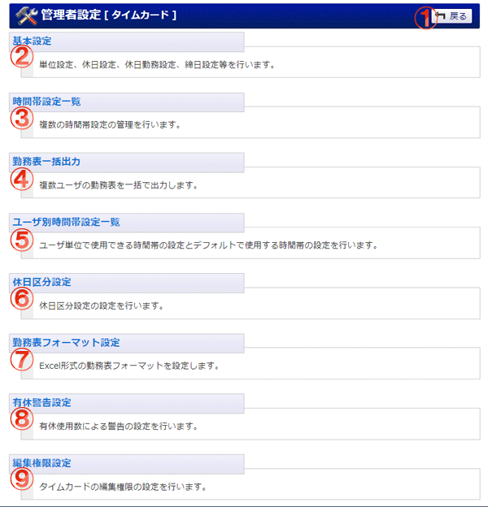

管理者グループに所属するユーザのみ使用可能な機能のメニュー画面です。

機能説明
戻るボタン遷移元の画面へ遷移します。 |
基本設定基本設定画面へ遷移します。単位設定、休日設定、休日勤務設定、締日設定等を行います。 |
|---|---|
時間帯設定一覧時間帯設定一覧画面へ遷移します。残業や休憩など、時間帯で区切る設定を行います。 |
勤務表一括出力勤務表一括出力画面へ遷移します。複数ユーザの勤務表を一括で出力します。 |
ユーザ別使用時間帯設定一覧ユーザ別使用時間帯設定画面へ遷移します。ユーザ単位で使用する時間帯の設定を行います。 |
休日区分設定休日区分設定画面へ遷移します。休日区分の設定を行います。 |
勤務表フォーマット設定勤務表フォーマット登録画面へ遷移します。Excelファイルから勤務表フォーマットを登録します。 |
有休警告設定有休警告設定画面へ遷移します。有休使用数による警告の設定を行います。 |
編集権限設定タイムカードの編集権限の設定を行います。 |